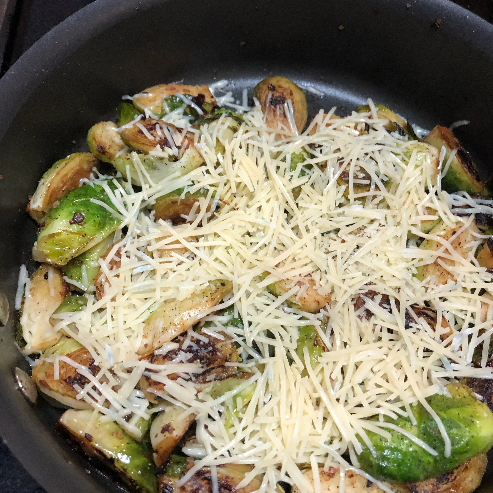

Parmesan Brussels Sprouts

This is one of my favorite ways to eat Brussels Sprouts.
It was my first year cooking Christmas dinner for the family and I was just thinking of imaginative vegetables I could have! Turned out great and everyone loved them and have been cooking them ever since. Goes well with everything.
Ingredients
- 1 tablespoon butter
- 2 cloves garlic, chopped
- 1 tablespoon butter
- 36 Brussels sprouts, trimmed and halved
- 1 tablespoon butter
- 2 tablespoons shredded Parmesan cheese, or more to taste
- salt and ground black pepper to taste
Directions
- Heat a frying pan over medium heat until hot, 3 minutes. Melt 1 tablespoon butter; cook and stir garlic until fragrant, 30 seconds. Add 1 tablespoon butter and Brussels sprouts, cut-side down; cover and cook until golden brown, 4 to 6 minutes.
- PFlip Brussels sprouts; add 1 tablespoon butter. Cover and cook until other side is browned, about 3 more minutes. Transfer to a serving plate. Sprinkle with Parmesan cheese, salt, and black pepper.